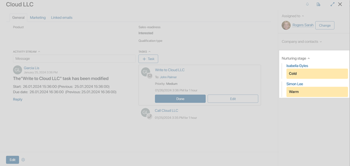
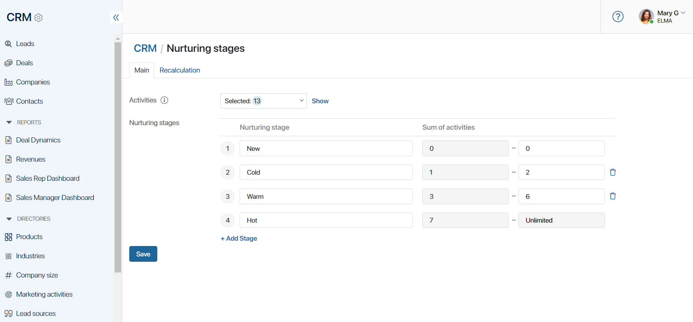
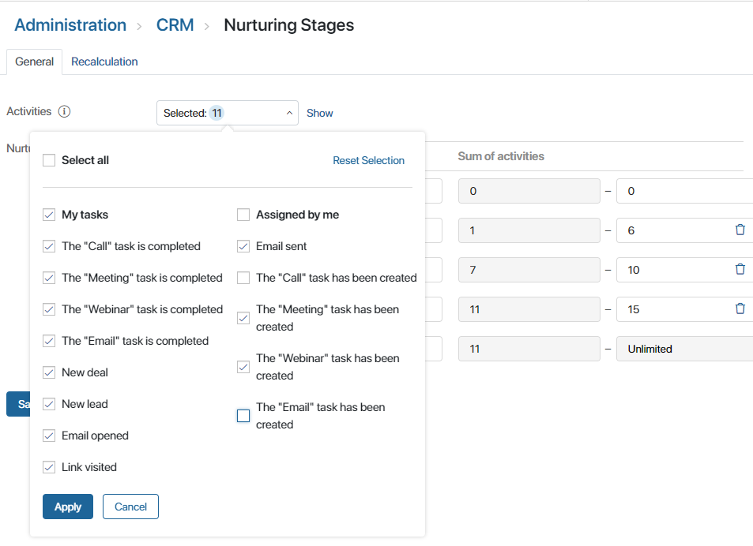
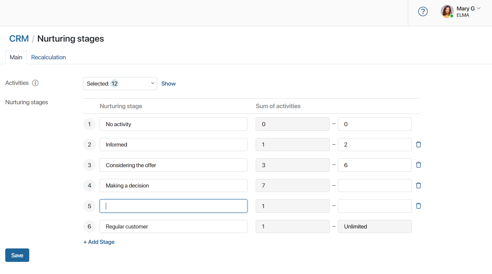
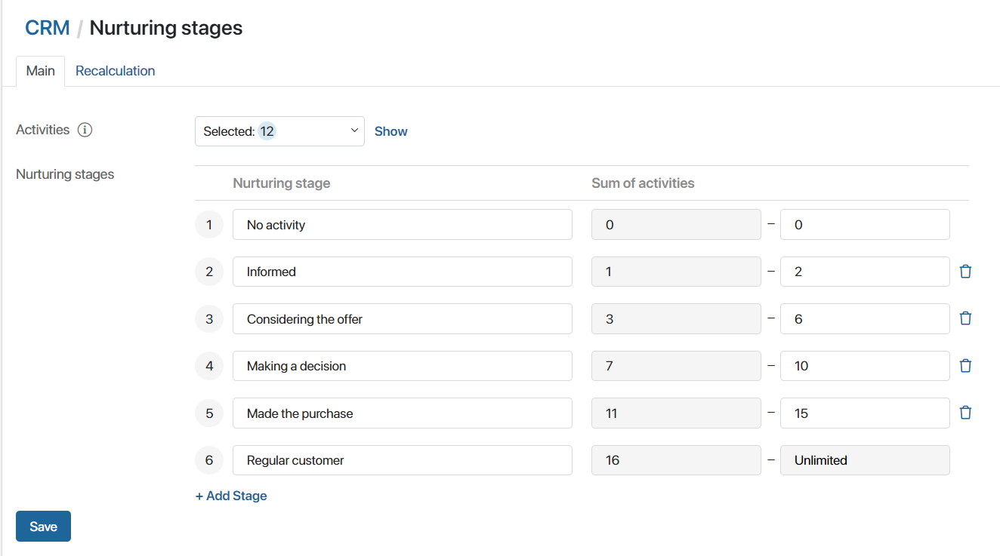
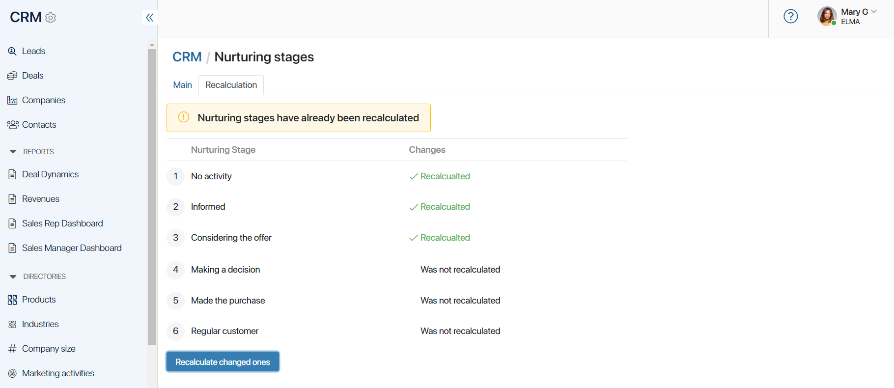

In BRIX, sales employees perform various activities to communicate with the client. When scheduling these activities, users indicate a specific contact person to be contacted. All activities performed with the contact are recorded in the system.
There are two types of activities:
- Incoming. Activities performed by a contact: opening an email and clicking on an attached link in an email. Incoming activities also include user activities in BRIX: creating a lead, creating a deal, and performing a CRM task.
- Outgoing. Activities performed by a user in BRIX: creating a CRM task and sending an email from the built-in inbox.
The system administrator can create custom activities, for example, to track additional ways of interacting with a client or their actions on the company's website. Records of these custom activities are logged in the system during the business process. For more details, read Activity log settings.
Records of activities are displayed in contact pages in the Activity log widget. This allows sales reps to easily track interactions with a contact. Additionally, data on interactions with the client are used to determine their readiness to make a purchase, that is, the lead nurturing stage.
By default, the following nurturing stages are preconfigured:
- New. A contact with no activities, which has not yet been contacted by managers.
- Cold. A contact has up to two activities, for example, a deal has been created and a call is planned.
- Warm. Three to six activities have been performed on the contact.
- Hot. An elaborated contact with seven or more completed activities.
The system administrator can edit stage names and conditions of their assignment.
Для To view the current stage, the Nurturing stages widget is used. It is displayed in the contact page. The administrator can add the widget to the forms of other apps, for example, Deals or Companies.
If multiple contacts are specified in an app item, the page will display the nurturing stage for each of them.

Change nurturing stages
You can edit the names of the default stages, add new stages, select the activities for which the calculation is performed, etc.
начало внимание
Only users who are members of the Administrators group can customize the progression stages.
конец внимание
- Go to nurturing stage settings. There are two ways to do it:
- go to Administration > Nurturing Stages;
- open the CRM workspace. Next to the workspace name, click the gear icon and select Configure Nurturing Stages.
- On the opened page, the settings are made on the two tabs Main and Recalculation.

- In the Activities field, expand the drop-down list or click Show to see which activities are currently used to calculate nurturing stages.
Select the activities you want to take into account. For instance, if you do not want the lead warming stage to change when CRM tasks are created, disable outgoing activities likeThe "Email" task has been created, The "Call" task has been created, etc.
Please note, these settings do not affect the display of records in the Activity log widget. To hide an activity from the widget, you can do so in the activity log settings.
- Click Apply to save the changes.

- In CRM > Nurturing Stages customize the nurturing stages. You can change the names of existing stages or create new ones. To do this, click + Add Stage and specify its name in the field. The entry will be added before the final stage.
- To delete a stage, click the recycle in icon next to its name. Please note, that the first and last stages cannot be deleted.

- In the Sum of activities column, specify how many activities the user must perform to assign each nurturing stage. When a new value is selected, the next stage’s value is automatically recalculated.

- Save the settings on the page.
- If you add new nurturing stages or change the sum of activities, you must apply the stage assignment conditions. To do this, go to the Recalculation tab. Its current status is indicated opposite each stage. If no assignment conditions have been changed for a stage, for example, only its name has been edited, you will see the status Recalculated.
- At the bottom of the page, click Recalculate changed ones and wait for the process to complete.

The settings have been completed. The stages will now be assigned according to the new conditions.
You can upload the changed settings of the nurturing stages to another company. To do this, export the CRM workspace and update it in another instance of BRIX, updating the CRM workspace in that company.
- To allow users to view the current stage, add the Nurturing stages widget to the CRM app forms.
Found a typo? Select it and press Ctrl+Enter to send us feedback